The feed index — thousands on /feeds, jumpstarts, and the rail as panels
Four surfaces, eight frames each side. Current is main at a2af930;
Proposed is claude/feed-index. Both captured by scripts/mock-snaps.mjs against the same
fixtures, in the default skin, at 390×844 and 1280×900 (MOCKS.md). The population is the committed index itself —
1,735 feeds and 889 jumpstarts the harvest found, so the widest real counts and the labelled rows are in the frames —
plus one jumpstart fixture built to stress the head card: a 14,930-member list, a 12,045 all-time join count, a
long name, a long handle, a graphic-media label, two feeds, twelve sampled members.
Open decisions
- The provenance line under every feed row (“Bluesky lists it · in the index · in 3 jumpstarts”). It is the honesty the plan asked for (D-own: a reader always knows whose editorial act they see) and it costs a line per row on a phone. Keep as a line, fold into the byline, or show only when it is not the common case?
- “likes loading…” on index rows before hydration. D2 says the file carries no count, so the first paint has none. Alternative: show the band as words (“100+ likes”) until the real count lands. The band is already how the Popular sort orders them.
- Popular jumpstarts first in the rail by default. Owner’s ask (2026-09-04) with “trending” corrected to “popular” (D6). The rail on a phone is a drawer; is eight rows the right count there, or four?
- The jumpstart head links out for the follow (D-follow: no follow-all here). The line under the link says Forage does not change your follows. Is that the right place for that sentence, or should it wait until the button exists?
1 · Browse feeds — the popular list ∪ the index
Current: the 117 Bluesky lists as popular. Proposed: the same 117 plus the index, every row saying whose it is, index rows hydrating their counts 25 at a time, and the count line naming the index’s age.
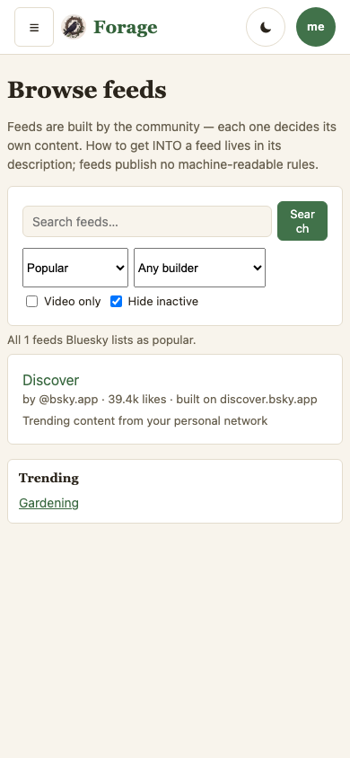

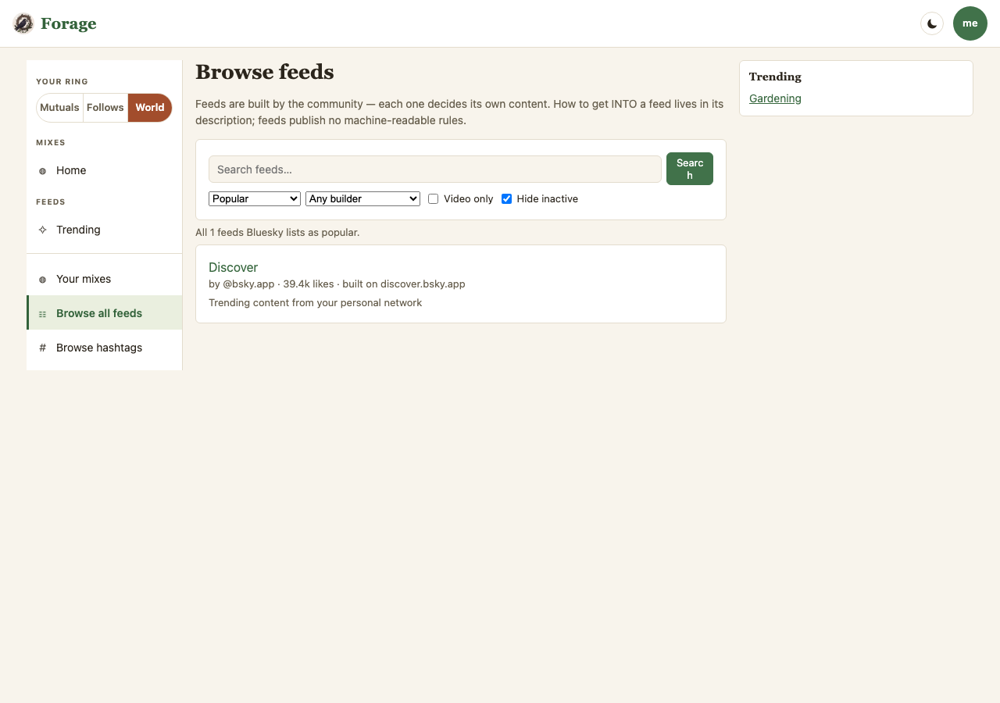
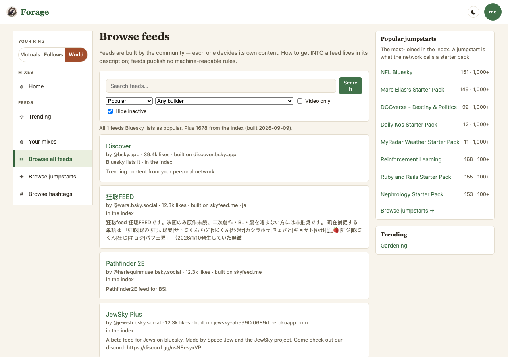
2 · Browse jumpstarts — new
Current: the route does not exist on main (the frame is the population gate’s honest absence). Proposed: the index’s jumpstarts, searched and sorted from memory, a curator chip, the gloss said once.
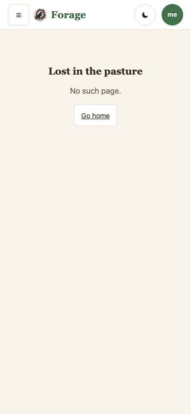
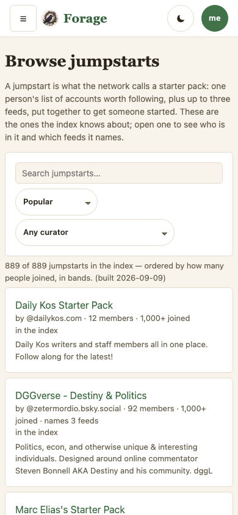
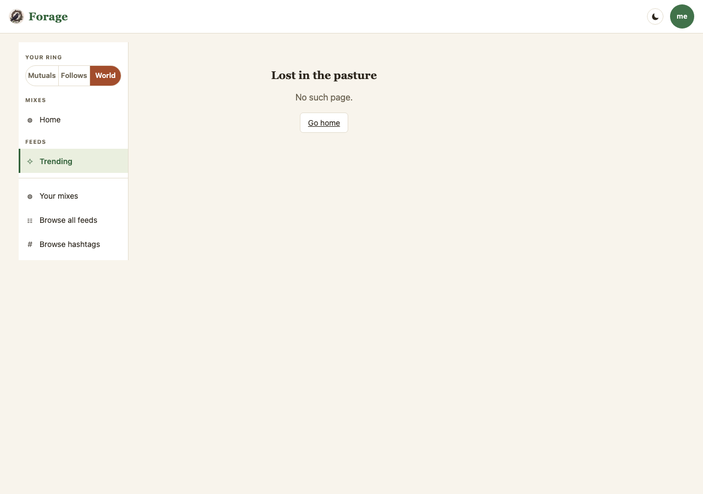
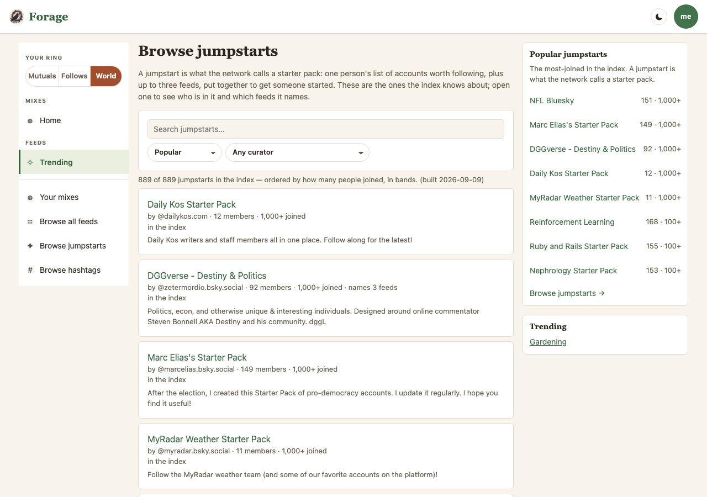
3 · One jumpstart — the head card under load
The fixture: a long name, a long handle, 14,930 members, 12,045 joined all time and 37 this week, a graphic-media label, two feeds it names, twelve sampled people, and the link out where the follow lives.

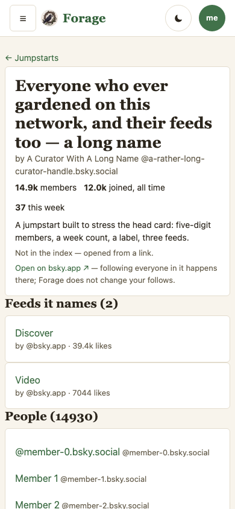

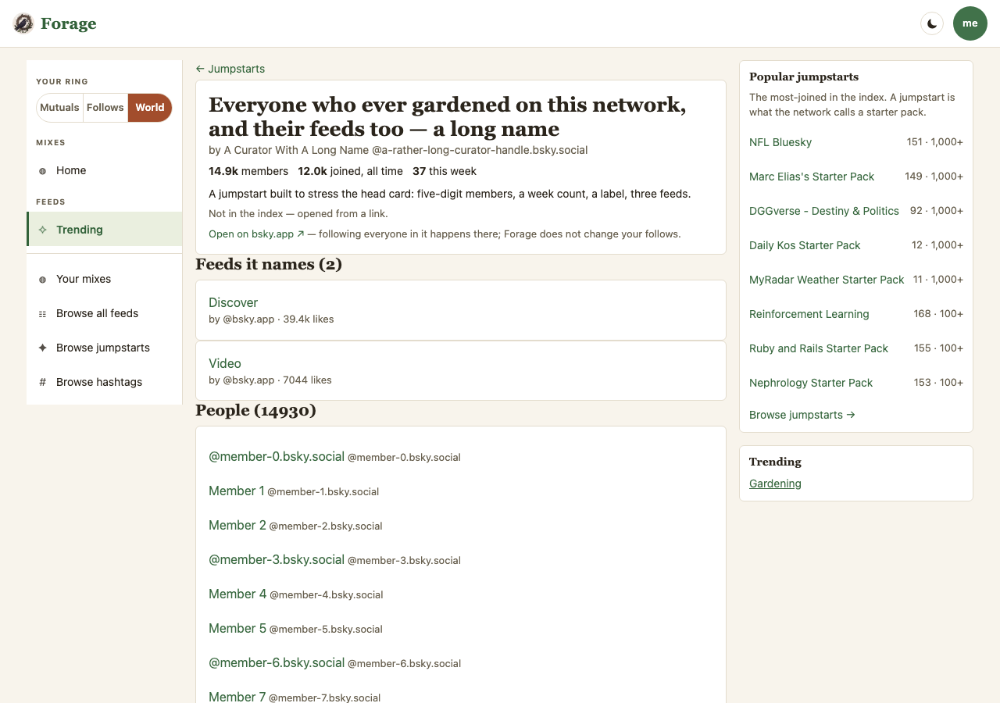
4 · The rail as panels
Current: sign-in card and Trending. Proposed: Popular jumpstarts first, then Trending, then sign-in for a guest — the order is the reader’s (Settings → Side panel), and “off” still empties it.

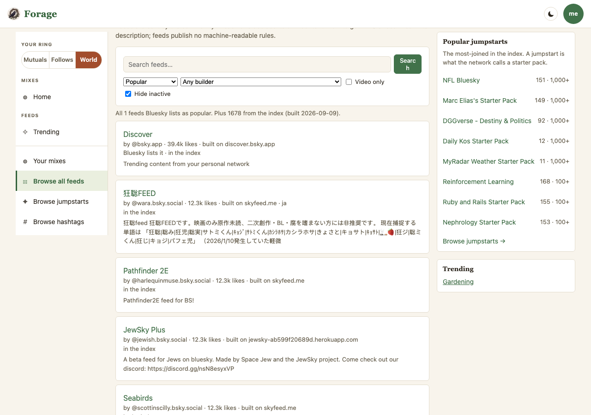

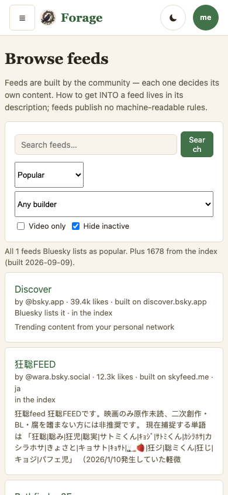
What the frames hold, and what they cannot
- The index in the frames is the one the branch commits (
data/feed-index.json, built 2026-09-09) — not a fixture. A later regenerate changes the rows; the manifest names the tree. - Hydration is fixtured (
__echoFeeds: every index row answers with 12,345 likes), so the “likes loading…” state and the settled state are both real paints of the engine, not drawings. - The Current frames for /jumpstarts and /j are the route’s absence on main. That is the honest comparison: the surface is new.
- Not shown: the Discovery index section under Advanced (Add / Replace / Off, paste or pick a file). It is a settings form; the plan’s workflow covers its behaviour and a frame of it adds nothing a form does not already say.